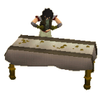

")
The Varrock Museum
Introduction

Of course, being such diligent academics and curators, there are few opportunities for any of them to leave the Museum, and so some assistance is necessary. While the books Reldo might be able to supply no doubt explain a great deal of what they discover, they also rely heavily on the secrets revealed by generous adventurers.
Navigating The Ages
![[image]](../../img/main/kbase/guides/museum/information.gif) The Museum is a large building spread across four floors, and can easily be intimidating to start exploring. For those with less of a head for navigation, the Information Clerk is a useful person to acquaint yourself with. Standing in the north-west corner as you enter the Museum, she is more than happy to distribute maps of the Museum to casual visitors and helpful adventurers alike.
The Museum is a large building spread across four floors, and can easily be intimidating to start exploring. For those with less of a head for navigation, the Information Clerk is a useful person to acquaint yourself with. Standing in the north-west corner as you enter the Museum, she is more than happy to distribute maps of the Museum to casual visitors and helpful adventurers alike.
She is also well-versed in the arcane calculations by which the Museum judges your archaeological skills, and will explain this 'Kudos' to you should you ask (see bottom of this page for more information).
Ground Floor - Archaeology
![[image]](../../img/main/kbase/guides/museum/museum_artefact.gif) Your first experience with the Museum of Varrock will no doubt be the impressive collection of artefacts recovered from the Dig Site. These range from collections of ancient arrowheads to strange symbols of a long-forgotten god. The Dig Site, having been the site of an ancient and mysterious city, has a unique assortment of antiquities from earlier ages, making it of particular interest to the scholars of RuneScape.
Your first experience with the Museum of Varrock will no doubt be the impressive collection of artefacts recovered from the Dig Site. These range from collections of ancient arrowheads to strange symbols of a long-forgotten god. The Dig Site, having been the site of an ancient and mysterious city, has a unique assortment of antiquities from earlier ages, making it of particular interest to the scholars of RuneScape.
If you happen to have passed the exams required to work in The Dig Site (members only), you may be permitted to help the archaeologists in their unending search for answers to some truly ancient riddles. You will, of course, need your gloves, boots, trowel, rock pick and specimen brush, but these can be found on a tool rack inside the cleaning area.
![[image]](../../img/main/kbase/guides/museum/jewellery.gif) To begin extracting relics from the samples that arrive, speak to the Museum Guard to be admitted to the archaeological section. To see if any of your finds are useful to the museum, take them to one of the archaeologists. Any finds of significance can then be placed in a display case and you will be rewarded with kudos.
To begin extracting relics from the samples that arrive, speak to the Museum Guard to be admitted to the archaeological section. To see if any of your finds are useful to the museum, take them to one of the archaeologists. Any finds of significance can then be placed in a display case and you will be rewarded with kudos.
The archaeologists have recently acquired a stone plinth for their new centrepiece exhibit. They will be particularly interested in any unusual pieces of stone that you may come across while skill training.
First and Second Floors - History
The history of RuneScape is a colourful one, filled with all many of great heroes, dire villains, and fabulous and terrible events. The history section of the Museum presents a number of exhibits chronicling these stories and attempting to connect the earliest days of the world's creation to the latest of the gnome's technical marvels. The first floor is dedicated to the first four ages of RuneScape, while the second floor deals exclusively with modern history.
Like all attempts to 'smooth over' the wrinkles and cracks in our knowledge of history, however, there are likely some incorrect details and some periods are completely devoid of details. Should you wish to assist the Museum in correcting this, speak with Historian Minas, who can be found on the first floor. The information you might gather on your quests will surely be of some interest to the Museum's visitors.
![[image]](../../img/main/kbase/guides/museum/lamp1.gif) Aside from the pleasure of seeing your worldly wisdom enhancing the educational quality of the Museum, some pieces of information you supply may be rewarded with a lamp, granting some experience in the skill of your choice.
Aside from the pleasure of seeing your worldly wisdom enhancing the educational quality of the Museum, some pieces of information you supply may be rewarded with a lamp, granting some experience in the skill of your choice.
Basement - Natural History
![[image]](../../img/main/kbase/guides/museum/museum_terrorbird.gif) There is, of course, much more to RuneScape than history and artefacts. Botany, biology and zoology are all eagerly studied by the relevant scientists within the Museum's walls, and the children of Varrock couldn't be happier. Aided by massive, mechanical displays, the staff of Varrock Museum bring some of the strange creatures to life to amuse or terrify the children that come to look.
There is, of course, much more to RuneScape than history and artefacts. Botany, biology and zoology are all eagerly studied by the relevant scientists within the Museum's walls, and the children of Varrock couldn't be happier. Aided by massive, mechanical displays, the staff of Varrock Museum bring some of the strange creatures to life to amuse or terrify the children that come to look.
Because of its appeal to children, the Natural History section is greatly valued by the schools, who bring their students to be educated. To this end, you will be able to attend lectures and assist in devising quizzes to test the students' learning. To find out more about the exhibits, seek out the Natural Historians, whose distinctive lectures are sure to be informative.
Kudos
 As you walk about the Museum, helping out as you are able, you will probably notice a small piece of text at the top of the screen. This is a record of your 'kudos' within the Museum. Kudos is a measure of how highly the Museum values your contributions.
In recent months the Museum's specialist field archaeologists have discovered an ancient island, largely untouched since the God Wars, positively littered with the remains of long-dead species. If your kudos is high enough when they finish building a safe passage to the island, you may well find yourself invited to share your expertise. To see how the construction of the barge and canal is getting on, head over to the land just north of the Dig Site.
To find out more about kudos, speak to the Information Clerk in the north-west corner of the ground floor. If you speak to the Information Clerk with a certain level of kudos, you will be rewarded with a one-off chunk of experience.
Warning: Spoilers Below To view the spoiler, highlight the box below with your cursor to see the text hidden insideShow spoiler...
| 51+ Kudos | 1000 experience in Mining |
| 101+ Kudos | 2500 experience in Crafting and Mining |
| 151+ Kudos | 4000 experience in Crafting, Hunter, Prayer, Slayer and Smithing |

More articles in
Miscellaneous Guides
|
|
|
Further Help
If this article does not help you, you may find the following sections of the RuneScape site helpful:
|
|